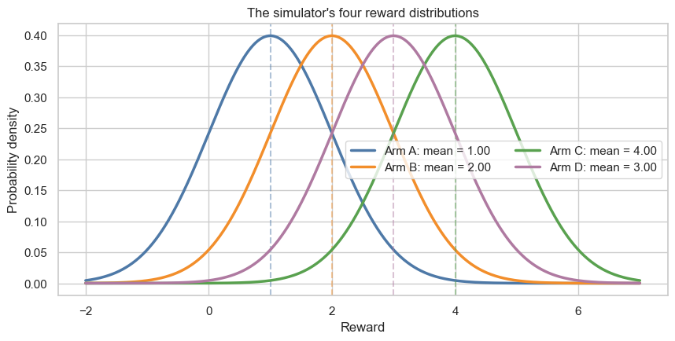
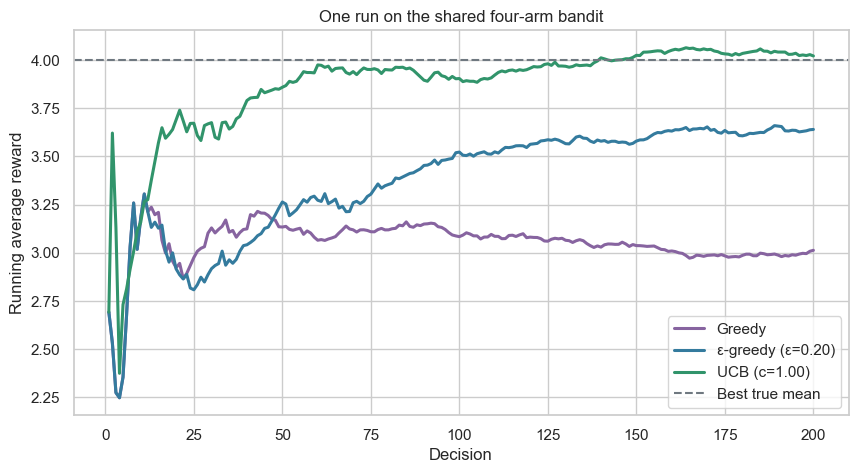
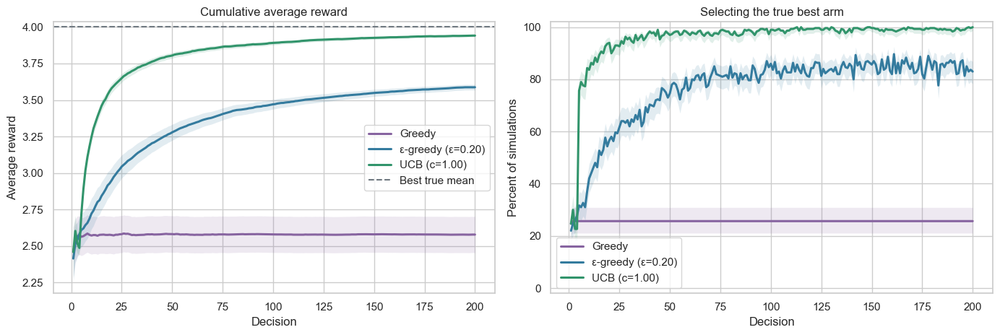

A multi-armed bandit is the smallest reinforcement-learning problem: at each decision, an agent chooses one action and observes one reward immediately. There is no changing state and no delayed consequence. The challenge is that the reward distributions are initially unknown.
What we will do
This notebook uses a four-arm bandit in which each arm’s reward follows a Gaussian distribution. A fixed random seed generates one reproducible environment, and those reward distributions remain fixed throughout every run. For readability, the four means are the simple values 1, 2, 3, and 4, randomly assigned to the arm labels by that seed. We will:
Define the fixed but unknown reward distribution for each arm.
Run greedy, \(\epsilon\)-greedy, and upper-confidence-bound (UCB) policies on one sampled trajectory.
Repeat the experiment many times to compare their typical behavior.
For arm \(a\), a reward follows \(R \mid A=a \sim \mathcal{N}(\mu_a, \sigma_a^2)\). The correct long-run value of an arm is its mean reward \(\mu_a\), but the agent must estimate it from the rewards it observes. In this example, \(\sigma_a = 1\) for every arm, so the arms differ only in their mean rewards.
import numpy as npimport pandas as pdimport matplotlib.pyplot as pltimport seaborn as snsfrom scipy.stats import normsns.set_theme(style="whitegrid", context="notebook")plt.rcParams["figure.figsize"] = (10, 5)# Draw one reproducible environment. These parameters stay fixed while a# policy learns, which is the stationary-bandit assumption.ENVIRONMENT_SEED =4_520environment_rng = np.random.default_rng(ENVIRONMENT_SEED)arm_names = np.array(["A", "B", "C", "D"])# The seed randomly assigns four readable mean rewards to the named arms.mean_rewards = environment_rng.permutation(np.array([1.0, 2.0, 3.0, 4.0]))# Every arm has the same amount of observation noise.reward_stds = np.ones(len(arm_names))ARMS = pd.DataFrame( {"arm": arm_names,"mean_reward": mean_rewards,"reward_std": reward_stds, })best_arm_index =int(ARMS["mean_reward"].idxmax())ARMS
arm
mean_reward
reward_std
0
A
1.0
1.0
1
B
2.0
1.0
2
C
4.0
1.0
3
D
3.0
1.0
1. The fixed reward environment
The table above is the simulator’s hidden answer. The agent does not receive these means or standard deviations. It only chooses an arm and sees one sampled reward. The arm with the highest mean reward is the arm an agent should increasingly select after learning.
The Normal curves below show the underlying distributions. Their overlap matters: a single reward from a weaker arm can exceed a single reward from the best arm.
x = np.linspace(-2, 7, 500)colors = ["#4e79a7", "#f28e2b", "#59a14f", "#af7aa1"]fig, ax = plt.subplots(figsize=(10, 4.5))for arm, color inzip(ARMS.itertuples(index=False), colors): density = norm.pdf(x, loc=arm.mean_reward, scale=arm.reward_std) ax.plot(x, density, color=color, linewidth=2.5, label=f"Arm {arm.arm}: mean = {arm.mean_reward:.2f}") ax.axvline(arm.mean_reward, color=color, linestyle="--", alpha=0.45)ax.set(xlabel="Reward", ylabel="Probability density", title="The simulator's four reward distributions")ax.legend(ncol=2, frameon=True)plt.show()

Sampling rewards
GaussianBandit represents the environment. It owns a separate random-number generator for each arm, so the reward stream for one arm does not depend on which other arms the policy chose. This makes policy comparisons easier to interpret.
class GaussianBandit:"""A stationary K-armed bandit with one Gaussian reward distribution per arm."""def__init__(self, arm_config, seed):self.means = arm_config["mean_reward"].to_numpy(dtype=float)self.stds = arm_config["reward_std"].to_numpy(dtype=float)# One generator per arm keeps each arm's reward sequence independent.self.generators = [np.random.default_rng(seed +7_919* index)for index inrange(len(self.means))]def pull(self, arm):"""Draw one reward after choosing the zero-based arm index."""returnself.generators[arm].normal(self.means[arm], self.stds[arm])bandit = GaussianBandit(ARMS, seed=104_729)# We inspect the highest-mean arm only for illustration; a learning agent# never sees best_arm_index or the true means.sample_rewards = [bandit.pull(best_arm_index) for _ inrange(8)]np.round(sample_rewards, 2)
Every policy maintains an estimate \(Q_t(a)\) for each arm. If arm \(a\) has been selected \(N_t(a)\) times through decision \(t\), its sample-average action value is:
Here, \(\alpha\) is the learning rate. The sample-average estimate used in this notebook is the special case \(\alpha = 1/N_t(a)\), after the new reward has been included in the count.
The policies differ only in how they select the next arm:
Greedy: choose the arm with the largest current estimate.
\(\epsilon\)-greedy: with probability \(\epsilon\), choose a random arm; otherwise choose greedily.
UCB: choose the largest estimate plus an uncertainty bonus, \(Q_t(a) + c\sqrt{\log(t+1)/N_t(a)}\).
For illustration, we use \(\epsilon=0.20\) and \(c=1.00\).
def random_argmax(values, rng):"""Break ties randomly instead of always choosing the first arm.""" candidates = np.flatnonzero(np.isclose(values, values.max()))returnint(rng.choice(candidates))def run_bandit_policy(policy, steps=200, epsilon=0.20, c=1.00, environment_seed=104_729, policy_seed=81_571):"""Run one bandit policy and return its decision-by-decision history.""" bandit = GaussianBandit(ARMS, seed=environment_seed) policy_rng = np.random.default_rng(policy_seed) k =len(ARMS) estimates = np.zeros(k) counts = np.zeros(k, dtype=int) total_reward =0.0 history = []for t inrange(steps):if policy =="greedy": action = random_argmax(estimates, policy_rng) decision_type ="greedy"elif policy =="epsilon_greedy":if policy_rng.random() < epsilon: action =int(policy_rng.integers(k)) decision_type ="explore"else: action = random_argmax(estimates, policy_rng) decision_type ="exploit"elif policy =="ucb": untried = np.flatnonzero(counts ==0)iflen(untried): action =int(policy_rng.choice(untried))else: bonus = c * np.sqrt(np.log(t +1) / counts) action = random_argmax(estimates + bonus, policy_rng) decision_type ="ucb"else:raiseValueError("policy must be 'greedy', 'epsilon_greedy', or 'ucb'") reward = bandit.pull(action) counts[action] +=1 estimates[action] += (reward - estimates[action]) / counts[action] total_reward += reward history.append( {"step": t +1,"arm": ARMS.loc[action, "arm"],"reward": reward,"running_average_reward": total_reward / (t +1),"selected_best_arm": action ==int(ARMS["mean_reward"].argmax()),"decision_type": decision_type, } )return pd.DataFrame(history), estimates, counts
3. One sampled learning trajectory
A single run makes the exploration-exploitation tradeoff tangible, but it is also noisy. The seed below makes this particular comparison reproducible. The dashed horizontal line marks the best arm’s true mean, which the policies do not see.
policy_labels = {"greedy": "Greedy","epsilon_greedy": "ε-greedy (ε=0.20)","ucb": "UCB (c=1.00)",}policy_colors = {"greedy": "#8764a0", "epsilon_greedy": "#347b9e", "ucb": "#31946b"}single_runs = {}for policy in policy_labels: history, estimates, counts = run_bandit_policy(policy) single_runs[policy] = {"history": history, "estimates": estimates, "counts": counts}best_mean = ARMS["mean_reward"].max()fig, ax = plt.subplots(figsize=(10, 5))for policy, result in single_runs.items(): history = result["history"] ax.plot(history["step"], history["running_average_reward"], linewidth=2.2, color=policy_colors[policy], label=policy_labels[policy])ax.axhline(best_mean, color="#6f7880", linestyle="--", label="Best true mean")ax.set(xlabel="Decision", ylabel="Running average reward", title="One run on the shared four-arm bandit")ax.legend()plt.show()summary = pd.DataFrame( { policy_labels[policy]: {"final running average": result["history"]["running_average_reward"].iloc[-1],"share of decisions choosing true best arm": result["history"]["selected_best_arm"].mean(), }for policy, result in single_runs.items() }).Tsummary.round(3)

final running average
share of decisions choosing true best arm
Greedy
3.013
0.000
ε-greedy (ε=0.20)
3.640
0.715
UCB (c=1.00)
4.021
0.975
4. Typical behavior across many runs
One trajectory can be lucky or unlucky. To compare policies fairly, we repeat the entire learning process with independent reward streams and average the resulting curves. We inspect two measures:
Cumulative average reward: how much reward the policy has earned per decision so far.
Best-arm selection rate: the percentage of simulations choosing the true best arm at each decision.
The light bands below are 95% pointwise Monte Carlo confidence intervals. They show how the estimated curves vary across repeated simulations of this fixed setup; they do not represent uncertainty about the fixed reward distributions.
def mean_interval(curves, z=1.96):"""Return a mean curve and a 95% pointwise Monte Carlo interval."""# This is the usual mean ± 1.96 × standard-error interval at each decision. mean = curves.mean(axis=0) standard_error = curves.std(axis=0, ddof=1) / np.sqrt(curves.shape[0])return {"mean": mean, "lower": mean - z * standard_error, "upper": mean + z * standard_error}def wilson_interval(indicator_curves, z=1.96):"""Return a robust 95% pointwise interval for a selection-rate curve."""# The 0/1 best-arm indicators can be near 0% or 100%, where Wilson intervals behave well. runs = indicator_curves.shape[0] rate = indicator_curves.mean(axis=0) denominator =1+ z**2/ runs center = (rate + z**2/ (2* runs)) / denominator half_width = z * np.sqrt(rate * (1- rate) / runs + z**2/ (4* runs**2)) / denominatorreturn {"mean": rate, "lower": center - half_width, "upper": center + half_width}def evaluate_policy(policy, runs=300, steps=200, epsilon=0.20, c=1.00):"""Estimate two learning curves over independent replications of one bandit setup.""" average_reward_curves = [] best_arm_curves = []for run inrange(runs): history, _, _ = run_bandit_policy( policy, steps=steps, epsilon=epsilon, c=c, environment_seed=10_000+ run, policy_seed=50_000+ run, ) average_reward_curves.append(history["running_average_reward"].to_numpy()) best_arm_curves.append(history["selected_best_arm"].to_numpy(dtype=float))return {"average_reward": mean_interval(np.asarray(average_reward_curves)),"best_arm_rate": wilson_interval(np.asarray(best_arm_curves)), }averaged_runs = {policy: evaluate_policy(policy) for policy in policy_labels}steps = np.arange(1, 201)fig, axes = plt.subplots(1, 2, figsize=(14, 4.8), sharex=True)for policy, curves in averaged_runs.items(): reward = curves["average_reward"] best_arm_rate = curves["best_arm_rate"] axes[0].fill_between(steps, reward["lower"], reward["upper"], color=policy_colors[policy], alpha=0.14, linewidth=0) axes[0].plot(steps, reward["mean"], linewidth=2.2, color=policy_colors[policy], label=policy_labels[policy]) axes[1].fill_between(steps, 100* best_arm_rate["lower"], 100* best_arm_rate["upper"], color=policy_colors[policy], alpha=0.14, linewidth=0) axes[1].plot(steps, 100* best_arm_rate["mean"], linewidth=2.2, color=policy_colors[policy], label=policy_labels[policy])axes[0].axhline(best_mean, color="#6f7880", linestyle="--", label="Best true mean")axes[0].set(title="Cumulative average reward", xlabel="Decision", ylabel="Average reward")axes[1].set(title="Selecting the true best arm", xlabel="Decision", ylabel="Percent of simulations", ylim=(-2, 102))axes[0].legend()axes[1].legend()plt.tight_layout()plt.show()

Takeaways
A greedy policy can commit to an arm after a lucky early reward and never learn about a better arm.
\(\epsilon\)-greedy keeps sampling every arm, even after it has a strong estimate.
UCB targets its exploration toward arms whose estimates remain uncertain.
The bandit has one state and immediate rewards. The next reinforcement-learning examples add a changing state and delayed consequences.